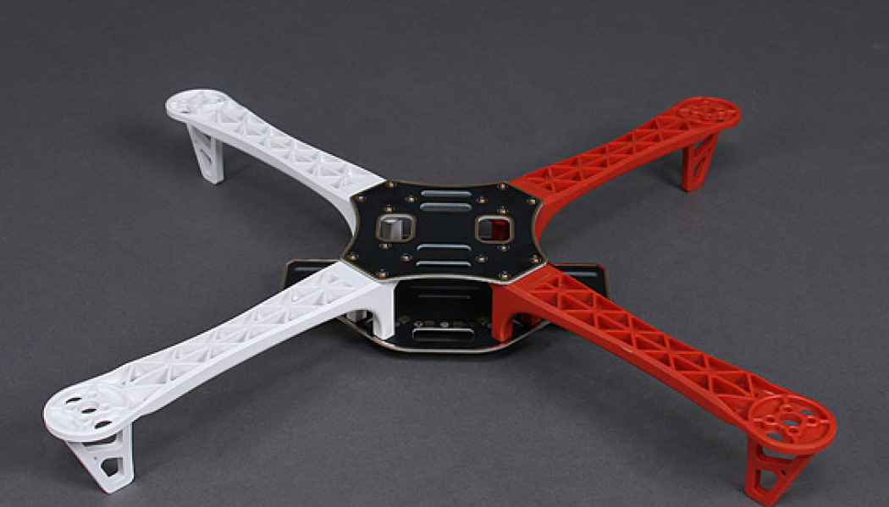
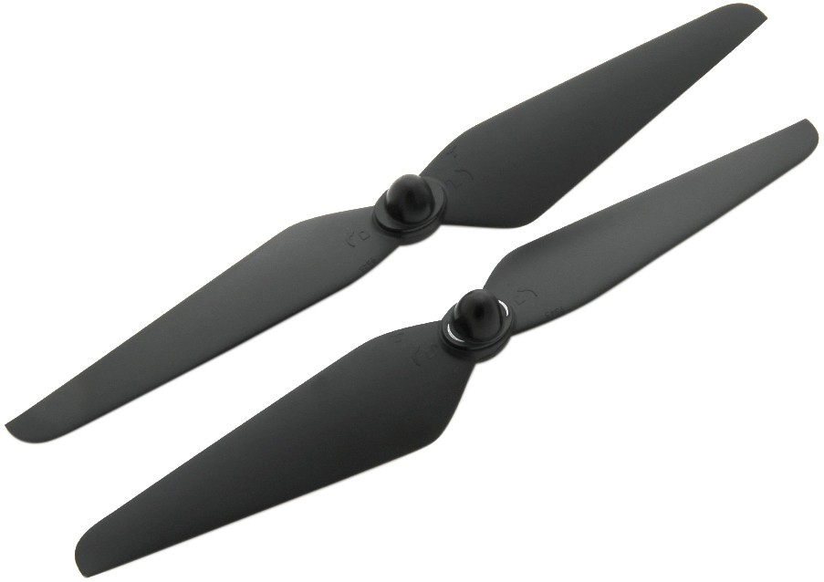
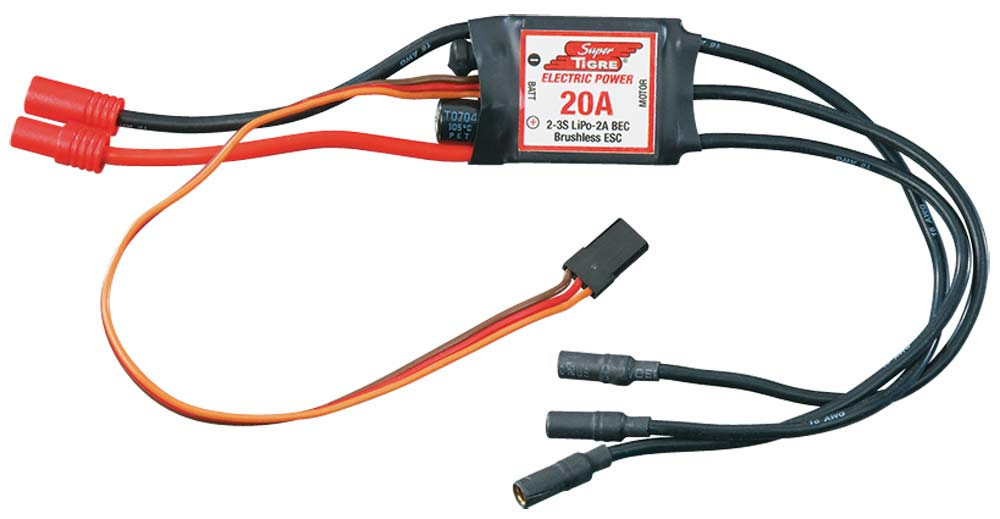
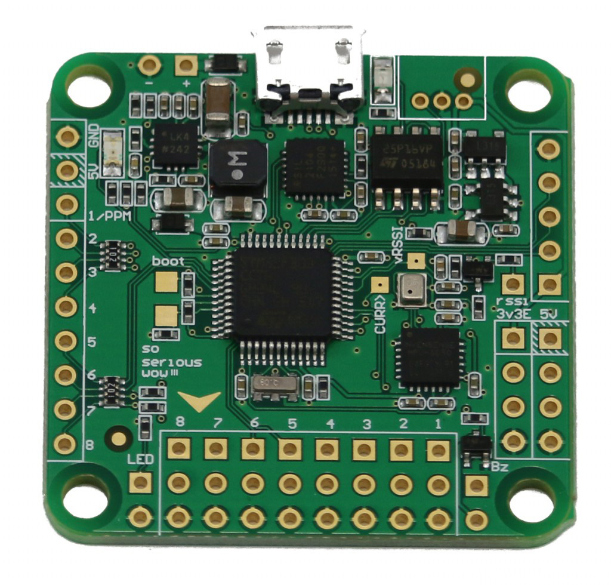
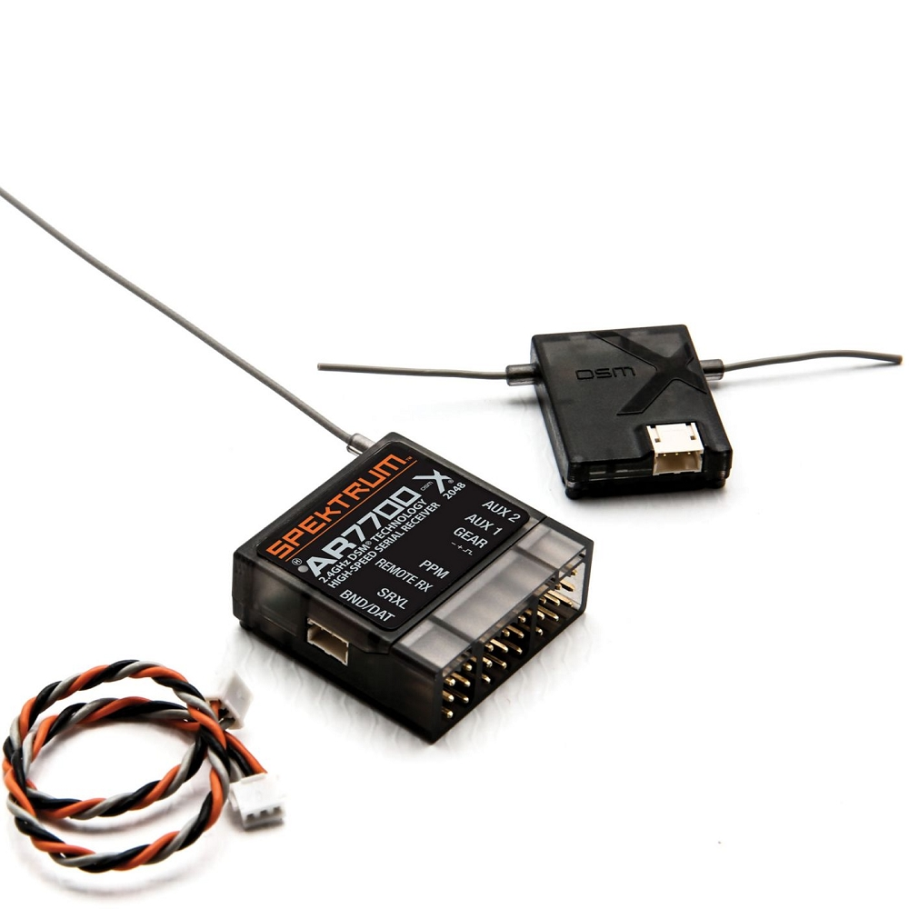

How it works
The magic behind this flying machines
A quadcopter is very agile machine which is capable of six degrees of freedom. The rotors are all connected to their individual motor which allow them to move at different speeds, allowing each rotor to provide thrust and torque
The vital priority is to keep the quadcopter stable. This is achieved using "artificial damping through feedback of rotational and translational velocity ... For rotational motion, this is conveniently used achieved by using the angular rates measured by using the angular rates measured by onboard gyroscopes, and this is typically performed at a high rate (500-1000Hz) in the onboard embedded flight controller.
PARTS LIST
Chassis

The skeleton of a quadcopter is the frame (chassis), some motors and propellers attached to the chassis. Let’s look at the frame first.
For hobbyists wishing to mount something with additional weight such as a camera, a sturdier frame rated for more weight is recommended
However, adding a sturdier material typically creates more weight itself, causing you to require longer propellers and a stronger motor to create the lift necessary to pull up the weight. There’s always a delicate balance played by the manufacturers between flight speed, maneuverability, and flight time.
Motor

The skeleton of a quadcopter is the frame (chassis), some motors and propellers attached to the chassis. Let’s look at the frame first.
However, faster is not always better. A faster motor spin requires much more power from the battery, causing your flight times to decrease. More RPMs also decrease the life of the motor over the long run. You’ll see this typically referred to as ‘burn out’.
Propeller

Propellers largely effect the speed at which the quadcopters fly, the load that they can carry, and the speed at which they can maneuver.
Longer propellers can achieve stronger lift at lower RPM than a shorter propeller, but take longer to speed up and slow down.
The faster you want to go, the more aggressive a pitch you want. If you want to go somewhere fast a higher pitch might be appropriate. Choosing the appropiate propeller is crucial for a nice flying.
ESC electronic speed controller

Electronic speed controller.
A machine of this sophistication does have more to it than that. Yet, you’d be surprised at how little more there actually is. The next part needed is an electronics component called an electronic speed control, or ESC. There’s an ESC for each of the four motors of the quadcopter.
An ESC supplies the proper modulated current to the motors, which in turn produce correct rates of spin for both lift and maneuvering. There are fewer things to consider with an ESC than with other components since they’re a fairly standard part, but there are two small factors.
Flight Controller

The brains of the quadcopter, the flight controller.
The flight controller is basically the little computer which controls the craft, and interprets the signals the transceiver sends to guide the quadcopter. For builders of quadcopters, choosing a flight controller is more of a personal choice in many ways, not unlike choosing from various PC processors in the same power range.
Each have various options that each manufacturer wants and may or may not be customizable. If this is something that needs to be fixed, start reading the forums and listen to hobbyists who recommend affordable, reliable controllers which work with most components easily.
Receiver

So how does the flight controller receive signals from the transmitter (the remote control)? That’s the radio receiver’s job.
This consists of a component which connects to the flight controller, to receive signals, and a controller to transmit them. There are a lot of very slick receivers which work quite well with standard quadcopter flight controllers.
A channel is a control input. If your quadcopter had no channels, it would just hover in place.
Battery

Finally, to power the quadcopter you’ll a power source, which is typically a LiPo (Lithium Polymer) battery.
A lot of battery types can be fully discharaged, but the LiPos have a minimum voltage requirements, which if gone beyond can cause damage to the battery.
You’ll also notice that most quadcopters come with a battery charger specially designed for the battery. It’s important to use the one they supply you with. It controls how much current is sent to the battery. Charging a LiPo battery past 100% could actually cause a fire. Make sure to charge batteries in a fire safe area (away from things that are flamable). Allow your battery time to cool before charging again.
The Physics of Quadcopter Flight
Multirotor Coordinate System/p>

- The roll angle of the multirotor describes how the craft is tilted side to side. Rotation about the roll axis is like tilting your head towards one of your shoulders. Rolling the multirotor causes it to move sideways
- The pitch angle of the multirotor describes how the craft is tilted forwards or backwards. Rotation about the pitch axis is like tilting your head in order to look up or down. Pitching the multirotor causes it to move forwards or backwards.
- The yaw angle of the multirotor describes its bearing, or, in other words, rotation of the craft as it stays level to the ground. Rotation about the yaw axis is like when you shake your head to say “no.
Coordinates
Roll and Pitch
To make the multirotor rotate about the roll or pitch axes, the flight controller makes the motors on one side of the multirotor spin faster than the motors on the other side. This means that one side of the multirotor will have more lift than the other side, causing the multirotor to tilt.
So, for example, to make a quadcopter roll right (or rotate about the roll axis clockwise), the flight controller will make the two motors on the left side of the multirotor spin faster than the two motors on the right side. The left side of the craft will then have more lift than the right side, which causes the multirotor to tilt.
Similarly, to make a quadcopter pitch down (rotate about the pitch axis clockwise) the flight controller will make the two motors on the back of the craft spin faster than the two motors on the front. This makes the craft tilt in the same way that your head tilts when you look down
P-I-D correction algorithms
There are three parameters that a pilot can adjust to improve better quadcopter stability > > >P.I.D
There are 3 algorithms in a PID controller, they are P, I, and D respectively. P depends on the present error, I on the accumulation of past errors, and D is a prediction of future errors, based on current rate of change. These controller algorithms are translated into software code lines.
- requires a slightly higher P
- requires a slightly lower I
- increase D
Acrobatic Flight
- requires a slightly lower P
- requires a slightly higher I
- decrease D